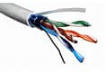

Światłowód – przezroczysta zamknięta struktura z włókna szklanego wykorzystywana do propagacji światła jako nośnika informacji.
Kable energetyczne oferują najsłabszej jakości transmisję danych. Jest to spowodowane brakiem ochrony przed szumami zakłócającymi, które pochodzą z innych źródeł niż nadajnik. Z tego względu te media nie nadają się do transmisji danych na większe odległości. Teoretyczna maksymalna przepustowość tego medium wynosi 200 Mbit/s.
